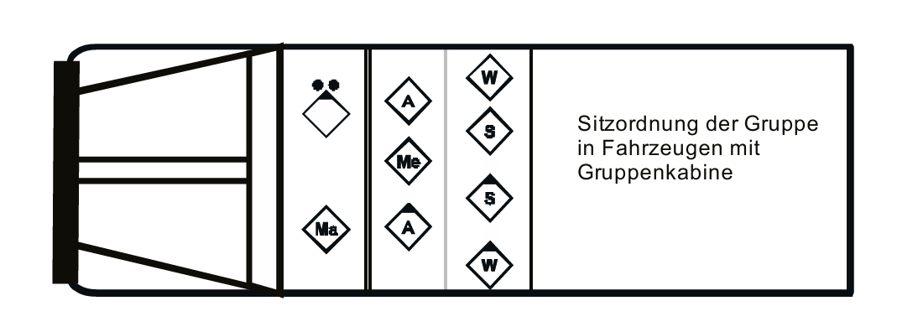
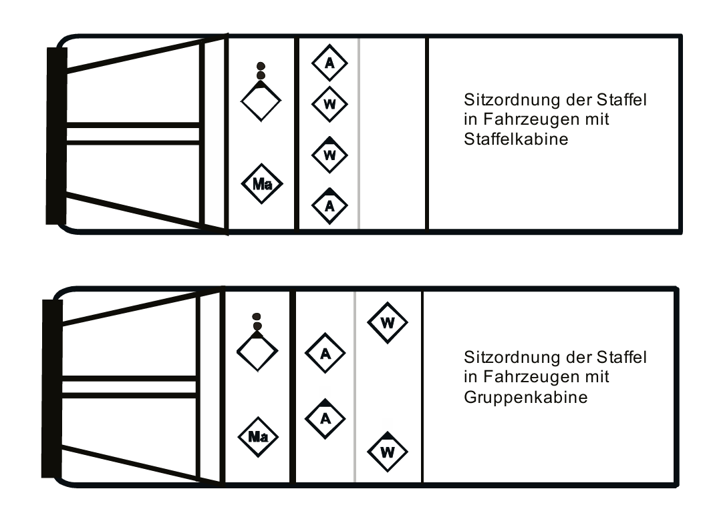
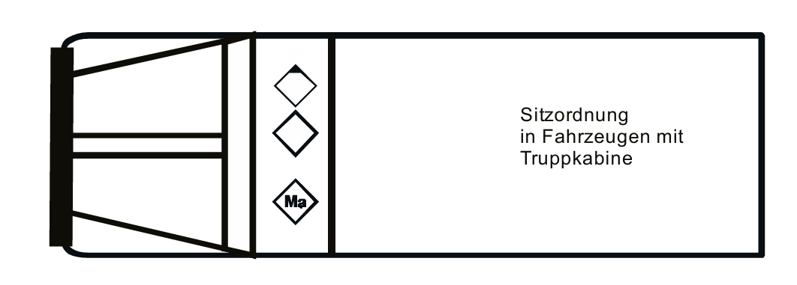

Aufsitzen!
Sitzordnung beim Ausrücken oder nach dem Kommando „Aufsitzen!“
Sitzordnung auf einem Fahrzeug mit Gruppenbesatzung:
Sitzordnung auf einem Fahrzeug mit Staffelbesatzung:
Sitzordnung auf einem Fahrzeug mit selbstsändigen Trupp:
Der Truppführer sitz (in Fahrzeugen mit Mannschaftskabine) immer auf der "Fahrerseite", um sich mit dem Einheitsführer verständigen zu können.
Durch eine andere Anordnung der Atemschutzgeräte im Mannschaftsraum kann sich die Sitzordnung ändern.